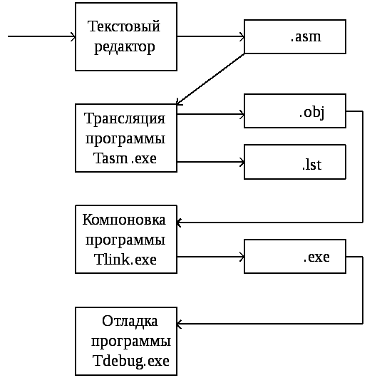
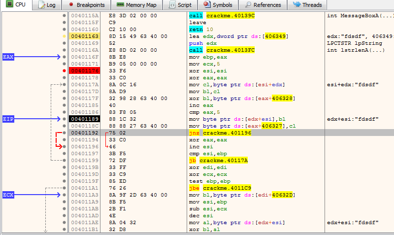

Ассемблер и язык ассемблера. История.Обзор.Применение.
Ассемблер — это программное обеспечение, которое преобразует код языка ассемблера в машинный код.
Он принимает основные команды компьютера и преобразует их в двоичный код,
который процессор компьютера может использовать для выполнения своих основных операций.
Эти инструкции написаны на языке ассемблера или языке ассемблера.
Мы также можем назвать ассемблер компилятором языка ассемблера.
Это связано с тем, что компилятор преобразует язык высокого уровня в машинный язык.
С другой стороны, ассемблер выполняет ту же задачу, но для языка ассемблера он называется компилятором языка
ассемблера.
Язык ассемблера — это язык низкого уровня. Он дает инструкции процессорам для выполнения различных задач. Это специфично для любого процессора. Машинный язык состоит только из 0 и 1, поэтому на нем сложно написать программу. С другой стороны, язык ассемблера близок к машинному языку, но имеет более простой язык и код. Мы можем создать код на ассемблере с помощью компилятора или программист может написать его напрямую. В основном программисты используют языки высокого уровня, но когда требуется более конкретный код, используется ассемблер. Он использует код операции для инструкций. Код операции в основном предоставляет информацию о конкретной инструкции. Символическое представление кода операции (инструкции машинного уровня) называется мнемоникой . Инструкции. Символическое представление кода операции (инструкции машинного уровня) называется мнемоникой . Программисты используют их для запоминания операций на языке ассемблера.
Первые ассемблеры были спроектированы
Кэтлин Бут
и Дэвидом Уилером
в 1947 под ARC2 и Дэвидом Уилером в 1948 под EDSAC,
при этом термин «ассемблер» не использовали, просто называя язык «множеством базовых команд»
и «начальными командами» соответственно.
Впервые термин «ассемблер» для процесса объединения полей в командное слово начали использовать более поздние отчёты по EDSAC.
Также на ранних этапах развития программирования было введено понятие
автокод — язык программирования, предложения которого по своей структуре в основном подобны командам и
обрабатываемым данным конкретного машинного языка. В настоящее время термин фактически не используется.
Исторически, если первым поколением языков программирования считать машинные коды,
то язык ассемблера можно рассматривать как второе поколение языков программирования.
Недостатки языка ассемблера, например, сложность разработки на нём больших программных комплексов,
позже привели к появлению языков третьего поколения — языков программирования высокого
уровня (таких как Фортран,
Лисп,
Кобол,
Паскаль,
Си
и другие).

Ассемблер (от англ. assembler — сборщик) — транслятор
программы из текста на языке ассемблера, в программу на машинном языке.
Как и сам язык, ассемблеры, как правило, специфичны для конкретной архитектуры,
операционной системы и варианта синтаксиса языка, поскольку работают с мнемониками
машинных инструкций определённого процессора. Вместе с тем, ассемблеры могут быть мультиплатформенными
или вовсе универсальными, то есть работать на разных платформах и операционных системах.
Среди ассемблеров можно также выделить группу кросс-ассемблеров, имеющих возможность собирать
машинный код и исполняемые модули (файлы) для архитектур, отличных от архитектуры и/или операционной системы,
в которых работает сам ассемблер (например, трансляция программы для микроконтроллера ассемблером,
работающим на компьютере).
Многие современные ассемблеры являются макроассемблерами,
то есть макропроцессорами на базе языка ассемблера.
Кроме макросов, ассемблеры при трансляции выполняют другие
директивы, набор которых зависит не от аппаратной платформы,
для которой транслируется программа,
а от самого используемого транслятора.
Ассемблирование может быть не первым и не
последним этапом на пути получения исполнимого модуля программы.
Так, многие компиляторы с языков программирования высокого уровня выдают результат в виде программы на языке ассемблера,
которую в дальнейшем обрабатывает ассемблер. В свою очередь, результатом ассемблирования может быть не исполняемый,
а объектный модуль, содержащий разрозненные блоки машинного кода и данных программы, из которого (или из нескольких объектных
модулей) в дальнейшем с помощью редактора связей (линкера) может быть получен исполняемый файл.
В отличие от компиляции программ на языках высокого уровня, ассемблирование является более или менее однозначным и обратимым процессом,
поскольку в языке ассемблера каждой мнемонике соответствует одна машинная инструкция,
в то время как в высокоуровневых языках каждое выражение может преобразовываться в большое число различных инструкций
(операция, обратная ассемблированию, называется дизассемблированием). Трансляцию ассемблерных программ иногда также называют
компиляцией.
Наиболее известными ассемблерами для операционной системы DOS являлись Borland Turbo Assembler (TASM), Microsoft Macro Assembler (MASM) и Watcom Assembler (WASM). Также в своё время был популярен простой ассемблер A86.
При появлении операционной системы Windows появилось расширение TASM, именуемое TASM 5+
(неофициальный пакет, созданный человеком с ником neonovd’), позволившее создавать программы для выполнения в среде
Windows. Последняя известная версия TASM — 5.3, поддерживающая инструкции MMX, на данный момент включена в Turbo C++
Explorer. Но официально развитие программы полностью остановлено. Последнее развитие компилятор получил благодаря
современной среде разработки TASM Visual. Среда неофициальная, но с её помощью работа с компилятором многократно
упрощается.
Microsoft поддерживает свой продукт под названием Microsoft Macro Assembler. Она продолжает развиваться и по сей день,
последние версии включены в наборы DDK. Но версия программы, направленная на создание программ для DOS, не развивается.
Кроме того, Стивен Хатчессон создал пакет для программирования на MASM под названием «MASM32».
В состав операционной системы GNU входит пакет binutils, включающий в себя ассемблер GAS (GNU Assembler), использующий AT&T-синтаксис, в отличие от большинства других популярных ассемблеров, которые используют Intel-синтаксис (поддерживается с версии 2.10).
Также существует открытый проект ассемблера, версии которого доступны под различные операционные системы, и
который позволяет получать объектные файлы для этих систем. Называется этот ассемблер NASM (Netwide Assembler).
Yasm — это переписанная с нуля версия NASM под лицензией BSD (с некоторыми исключениями).
flat assembler (fasm) — молодой ассемблер под модифицированной для запрета перелицензирования (в том числе под GNU GPL)
BSD-лицензией. Есть версии для KolibriOS, Linux, DOS и Windows; использует Intel-синтаксис и поддерживает инструкции x86-64.
MCS-51 (Intel 8051) — классическая архитектура микроконтроллера. Для неё существует кросс-ассемблер ASM51,
выпущенный корпорацией MetaLink.
Кроме того, многие фирмы-разработчики программного обеспечения, такие, как IAR или Keil, представили свои варианты
ассемблеров. В ряде случаев применение этих ассемблеров оказывается более эффективным благодаря удобному набору
директив и наличию среды программирования, объединяющей в себе профессиональный ассемблер и язык программирования Си,
отладчик и менеджер программных проектов.
На данный момент для AVR существуют 4 компилятора производства Atmel (AVRStudio 3, AVRStudio 4, AVRStudio 5 и AVRStudio 6, AVRStudio 7). В рамках проекта AVR-GCC (он же WinAVR) существует компилятор avr-as (это портированный под AVR ассемблер GNU as из GCC).Также существует свободный минималистический компилятор avra. Платные компиляторы: IAR (EWAVR), CodeVisionAVR, Imagecraft. Данные компиляторы поддерживают языки Assembler и C, а IAR ещё и C++. Существует компилятор с языка BASIC — BASCOM, также платный.
Для процессоров ARM существует достаточно широкий выбор компиляторов, внутренняя реализация которых зависит от непосредственно производителя данного ARM-процессора либо разработчика IDE для работы с ARM-процессорами. Официальным компилятором ARM, непосредственно от компании ARM, является ARM Compiler 6, который входит в IDE DS-5 Development Studio и поддерживает компиляцию программ на языках Си и C++. Компиляторы от поставщиков ARM процессоров и разработчиков ARM toolchain:
| № | Поставщик IDE | Компилятор | Поддерживаемые языки | Условия использования |
|---|---|---|---|---|
| www.lab1.lab | ||||
| 1. | Keil mVision | MDK-ARM | Си/C++/Assembler | Shareware (не более 32kb) |
| 2. | IAR Embedded Workbench | IAR Compiller | Си/C++/Assembler | Commercial |
| 3. | CoIDE | GCC compiler | Си/C++/Assembler | Free/Commercial |
| 4. | True Studio | Precompiled GCC compiler | Си/C++/Assembler | Free/Commercial |
Не существует общеупотребительного синтаксиса языка ассемблера. Так как системы команд различных процессоров значительно отличаются, также и отличаются языки ассемблера для этих процессоров. Кроме того, каждая программа-ассемблер может использовать отличающийся от других синтаксис. В ассемблерах для процессоров x86 наибольшее распространение получил так называемый Intel-синтаксис, в меньшей степени — синтаксис AT&T.
Базовой конструкцией языка ассемблера является мнемоника, или мнемокод — краткое символьное представление команды процессора. Как правило, она состоит из нескольких символов, обозначающих производимое действие (например, mov — для пересылки из одного регистра в другой, add — для сложения значений и т.д.). Также в мнемонику может входить объект, над которым производится операция (регистр, память, стек), либо другие особенности (влияние на регистр флагов, условия исполнения и т.д.), однако в других диалектах те же особенности могут задаваться в операндах.
Как правило, ассемблер каждого процессора имеет свой традиционный набор мнемоник, но встречаются ассемблеры с кроссплатформенным синтаксисом (такие, как синтаксис AT&T), однако кроссплатформенными в них остаются только обозначения, код одного процессора не может быть напрямую перенесён на другой.
В качестве операндов могут указываться регистры, константные значения, адреса ячеек памяти и портов ввода-вывода, константы, метки и т.д. Разные ассемблеры могут требовать разного порядка операндов: в одних реализациях первым идёт оператор, в который записывается значение, в других он идёт последним. Как правило, операнды отделяются от мнемоник команд пробелами.

Синтаксис директив, стандартных макросов и пр. структурных элементов различных диалектов (к примеру, MASM, fasm, NASM, GAS), могут отличаться довольно существенно. Мнемоники (имена) инструкций (команд) и регистров, а также синтаксис их написания для одного и того же процессора примерно одинаковы почти во всех диалектах (заметным исключением среди популярных ассемблеров является разве что GAS (GNU Assembler) в режиме синтаксиса AT&T для x86, где к именам инструкций могут добавляться суффиксы, обозначающие размер обрабатываемых ими данных, что бывает довольно удобно, но там есть и другие нюансы, сбивающие с толку программиста, привыкшего к классическому ассемблеру, к примеру, иной порядок указания операндов, хотя всё это лечится специальной директивой переключения в режим классического синтаксиса Intel). Поскольку ассемблер – самый низкоуровневый язык программирования, довольно проблематично написать код, который корректно компилировался бы для разных архитектур процессоров (например, x86 и ARM), для разных режимов одного и того же процессора (16-битный реальный режим, 32-битный защищённый режим, 64-битный long mode; а ещё код может быть написан как с использованием различных технологий вроде SSE, AVX, FMA, BMI и AES-NI, так и без них) и для разных операционных систем (Windows, Linux, MS-DOS). Хоть иногда и можно встретить «универсальный» код (например, отдельные библиотеки), скажем, для 32- и 64-битного кода ОС Windows (или даже для Windows и Linux), но это бывает нечасто. Ведь каждая строка кода на ассемблере (не считая управляющих директив, макросов и тому подобного) – это отдельная инструкция, которая пишется для конкретного процессора и ОС, и сделать кроссплатформенный вариант можно только с помощью макросов и условных директив препроцессора, получая в итоге порой весьма нетривиальные конструкции, сложные для понимания.
.486
.model flat, stdcall
option casemap :none
include windows.inc
include kernel32.inc
include masm32.inc
include user32.inc
includelib kernel32.lib
includelib masm32.lib
includelib user32.lib
complex struct
real dq ?
imaginary dq ?
complex ends
.data
array complex <1.0, -2.0>, <-4.5, 1.25>, <0.0, -3.1>, <3.5, -1.5>, <2.0, -3.0>
zero dd 0
message db 'complex' 10,0
template_unr db 'Maximal by imaginary part: %s + (%s * i) ', 10, 0
template_r db 'Maximal by real part: %s + (%s * i)', 10, 0
.data?
inputHandle dd ?
outputHandle dd ?
numberOfChars dd ?
inputBuffer dd ?
answer db 100 dup (?)
num_r dq ?
num_im dq ?
buf dd ?
.code
complexCompareByRealPart:
mov EAX,[ESP+4]
FLD qword ptr [ EAX]
mov EAX,[ESP+8]
FCOMP qword ptr [EAX]
FSTW AX
SAHF
ja great1
jb less1
mov EAX,0
jmp return1
great1:
mov EAX,1
jmp return1
less1:
mov EAX,-1
return1:
ret 8
complexCompareByModulus:
mov EAX [ESP+8]
FLD qword ptr [EAX]
FMUL ST (0) ST (0)
FADDP ST (1) ST (0)
mov EAX [ESP+8]
FLD qword ptr [EAX]
FMUL ST (0) ST (0)
FLD qword ptr [EAX+8]
FMUL ST (0) ST (0)
FADDP ST (1) ST (0)
FSUBP ST (1) ST (0)
FICOMP zero
FSTW AX
sahf
ja great2
jb less2
mov EAX,0
jmp return2
great2:
mov EAX,1
jmp return2
less2:
mov EAX,-1
return2:
ret 8
max:
mov EBX [ESP+4]
mov ECX [ESP+8]
mov EDX [ESP+12]
mov ESI EBX
beginCycle:
cmp ECX, 0
je endCycle
push ESI
push EBX
push EDX
cmp EAX, 0
call EDX
cmp EAX, 0
jng skip
mov ESI EBX
skip:
add EBX, 16
dec ECX
jmp beginCycle
endCycle:
mov EAX ESI
ret 12
start:
push STD_INPUT_HANDLE
call GetStdHandle
mov inputHandle, EAX
push STD_OUTPUT_HANDLE
call GetStdHandle
mov outputHandle, EAX
push NULL
push offset numberOfChars
push EAX
push outputHandle
call WriteConsole
push complexCompareByModulus
push 5
push offset array
call max
mov buf, EAX
push offset num_r
push dword ptr [EAX+4]
push dword ptr EAX
call FloatToStr
mov EAX, buf
push offset num_im
push dword ptr [EAX+12]
push dword ptr [EAX+8]
call FloatToStr
push offset num_im
push offset num_r
push offset template_unr
push offset answer
call wsprintf
add ESP, 20
push offset answer
call lstrlen
push NULL
push offset numberOfChars
push EAX
push offset answer
push outputHandle
call WriteConsole
push NULL
push offset numberOfChars
push 1
push offset inputBuffer
push inputHandle
call ReadConsole
push 0
call ExitProcess
end start
Из-за того, что язык ассемблер трудноприменим для разработки объёмных программных комплексов, стали появляться новые высокоуровневые языки, такие как Фортран, Лисп, Кобол, Паскаль, Си и другие. Именно они (и придуманные вслед за ними языки) сейчас активно используются в современных информационных технологиях.
Тем не менее и языки ассемблера остаются, что называется «при деле». Благодаря своим уникальным достоинствам, они демонстрируют высокую эффективность и возможность задействования в полной мере мощностей и уникального инструментария конкретной платформы.
Язык ассемблер отлично подходит для написания программ, где важными критериями является:
Вообще, на ассемблере, как на фундаменте, держится всё программирование с тех пор, как в мире появился первый процессор. Представьте себе, как физики, стремясь постичь строение вселенной, ведут поиски тех самых неделимых низкоуровневых элементов, из которых она изначально создавалась. Но у ученых для этого есть лишь квантовая теория. А вот первичной материей вселенной процессора как раз и является язык программирования ассемблер. Именно он раскрывает принцип работы машинных команд, без чего не обойтись ни одному программисту, даже если конкретно на ассемблере он никогда ничего писать не будет. Это точно так же, как, не зная азов арифметики, нельзя стать математиком. Не важно, на каком языке вы собираетесь писать коды, но вы должны иметь представление о том, как процессор будет реагировать на те или иные команды. В противном случае программист станет наваливать в одну кучу известные ему операции, не особо понимая, каким будет конечный результат.А когда есть необходимость использования большого числа компьютеров, объединенных одной целью, то во главу угла ставится невысокая себестоимость и большая скорость работы. И вот тут ассемблер вновь становится незаменимым решением.
Получается, что если вы разработчик приложений для мобильных устройств, то ассемблер – не для вас. Но если вы работаете на С, и используете микроконтроллер, то без ассемблера здесь точно не обойтись, иначе вряд ли ваш путь в программировании будет успешным.
class="pref">тут находятся остальные 11 свойств